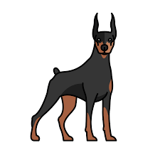

The Dobermann, German, or Doberman Pinscher in the United States and Canada, is a medium-large breed of domestic dog that was originally developed around 1890 by Louis Dobermann, a tax collector from Germany. The Dobermann has a long muzzle. It stands on its pads and is not usually heavy-footed. Ideally, they have an even and graceful gait. Traditionally, the ears are cropped and posted and the tail is docked. However, in some countries, these procedures are now illegal and it is often considered cruel and unnecessary. Dobermanns have markings on the chest, paws/legs, muzzle, above the eyes, and underneath the tail.
Back to home